第1条（個人情報）
「個人情報」とは，個人情報保護法にいう「個人情報」を指すものとし，生存する個人に関する情報であって，当該情報に含まれる氏名，生年月日，住所，電話番号，連絡先その他の記述等により特定の個人を識別できる情報及び容貌，指紋，声紋にかかるデータ，及び健康保険証の保険者番号などの当該情報単体から特定の個人を識別できる情報（個人識別情報）を指します。
- ービス：対面による診療と組み合わせながら、医療機関オネストLクリニックによってオンラインで診療を行うサービス
- 当クリニック：本サービスを利用して、患者様に医療行為を提供する医療機関
- 利用契約：本規約に基づき、患者様が本サービスの提供を受けるための合意
- 患者様：本サービス上で提携医療機関から医療サービスを受ける者
- 診療行為：本サービスを利用して実施される、提携医療機関と患者様との間の診療契約に基づき実施される診察、診断その他の医療行為
第2条 （規約の適用）
オネストLクリニック（以下「当クリニック」といいます。）は利用規約（以下「本規約」といいます。）を基にサービス（以下「本サービス」）を提供します。
本サービスはオンライン診療を行うことを目的としています。
本サービスの患者様（以下「患者様」といいます。）は、自己責任において本サービスをご利用ください。当クリニックが本サービスを利用して実施する診療により、利用者に何らかの不都合、不利益が発生し、また損害を被った場合でも当クリニックはその一切の責任を負いませんので予めご了承ください。
第3条 （患者合意）
本規約に同意したということは、患者様が本サービスを希望する旨を明示的に確認した上で署名したものと致します。
患者様が本規約に同意されない場合は、当サービスをご利用になれません。
当クリニックは、本規約及び本サービスに掲載された情報をいつでも予告なしに変更できるものとします。また、予告なしに当サービスの内容、プログラムに対して改良、変更、または中止する場合があります。
患者様が未成年である場合には、親権者等の法定代理人の同意（本規約への同意を含みます。）を得て本サービスを利用してください。
また、本規約に同意した時点で未成年であった患者様が、成年に達した後に本サービスを利用した場合、未成年であった間の利用行為を追認したものとみなします。
第4条（本規約の変更・改訂）
本サービスの向上のため、利用規約は将来に向けて変更されることがあります。この場合、当クリニックは利用規約を患者様への事前の通知なく変更できるものとします。利用規約が将来変更された場合、利用者には変更後の利用規約が適用となり、規約変更の告知後に患者様が本サービスの利用を継続した場合、患者様は変更に同意したものとみなします。
第5条（本サービスの提供の停止等）
- 当クリニックは、以下のいずれかの事由があると判断した場合、患者様に事前に通知することなく本サービスの全部または一部の 提供を停止または中断することができるものとします。
- 本サービスにかかるコンピュータシステムの保守点検または更新を行う場合
- 地震、落雷、火災、停電または天災などの不可抗力により、本サービスの提供が困難となった場合
- コンピュータまたは通信回線等が事故により停止した場合
- その他、当クリニックが本サービスの提供が困難と判断した場合
- 当クリニックは、本サービスの提供の停止または中断により、患者様または第三者が被ったいかなる不利益または損害について、理由を問わ ず一切の責任を負わないものとします。
第6条（個人情報）
- 患者様は、当クリニックからの要請に応じて、患者様の所在地や連絡先を含む正確な患者様個人情報(以下「患者様情報」を提供するものとします。
- 患者様が当クリニックに届け出ている患者様情報に変更が生じた場合、患者様は当クリニックへ速やかに当該情報を連絡するものとします。
- 当クリニックは、患者様情報および患者様の当サービス利用状況データ(以下「当利用状況」を善良なる管理者としての注意を払って管理するものとします。患者様は、当クリニックが患者様情報又は当利用状況の全部又は一部を、プライバシーポリシーに定める目的及び当サービスを提供する目的の他に、次の各号に定める目的に利用し、又は第三者に提供することがあることに同意するものとします。
- 当サービスの追加及び変更の案内、又は緊急連絡の目的で、電子メールや郵便、電話等による連絡する場合。
- 当クリニックが、当サービスに関する利用動向を把握する目的で統計分析を行い、利用又は当クリニックの業務提携先に提供する場合。
- 法的な義務を伴う開示要求へ対応する場合。
- 当サービスの適切な管理・運営のために必要であると当クリニックが判断した場合。
- 違法行為または迷惑行為の防止のため、もしくは他の患者様の良好な環境下における当サービスの提供に必要であると当クリニックが判断した場合。
- 患者様から事前に同意を得た場合。
当サービスの利用に際し、患者様は、当サービスの各ソフトウェアが患者様の情報を収集・利用することに同意いただく必要があります。
第7条（診療）
- 患者様は、当クリニックにおいて対面での診察を受けた後でなければ当サービスによる診察を受けられない場合があることに同意するものとします。
- 患者様は、年齢や疾患や内服薬継続に関しては、当サービスによる診察を受けられない場合があることに同意するものとします。
- 患者様は、当サービスによる診察を受けるにあたり、当サービス利用のための情報通信機器の使用方法、特性等その他重要な事項について説明を受け、これを理解したうえで当サービスを利用するものとします。
- 患者様は、当サービスを利用するための情報通信機器等が故障した場合における対処方法について、別途当クリニックとの協議により定めるものとします。
- 患者様は、当サービスによる診療を受けるにあたり、患者様又はそのご家族が当クリニックによる相応の指示や注意に従わないた患者様に被害が生じた場合、当クリニックはその責任を一切負わないことについて、同意するものとします。
- 患者様は、当サービスによる診療を受けるにあたり、情報通信機器等の仕様上、送受信される映像が不鮮明である場合等、対面で直接行われる診察と比較して詳細な診療が行えない場合があることに同意するものとします。
- 患者様は、疾患によっては当サービスによる診療を実施することが困難な場合があることに同意するものとします。
第8条（保証の否認及び免責）
- 当クリニックは、本サービスに事実上または法律上の瑕疵（安全性、信頼性、正確性、完全性、有効性、特定の目的への適合性、セキュリティなどに関する欠陥、エラーやバグ、権利侵害などを含みます。）がないことを保証するものではありません。 れたものであるという理由により，その利用の停止または消去（以下，「利用停止等」といいます。）を求められた場合には，遅滞 なく必要な調査を行います。
- 当クリニックは、本サービスによって患者様に生じたあらゆる損害について、一切の責任を負いません。ただし、本サービスに関する当クリニックと患者様との間の契約（本規約を含みます。）が消費者契約法に定める消費者契約となる場合、この免責規定は適用されませんが、この場合であっても、当クリニックは、当クリニックの過失（重過失を除きます。）による債務不履行または不法行為によりユー患者様に生じた損害のうち特別な事情から生じた損害（当クリニックまたは患者様が損害発生につき予見し、または予見し得た場合を含みます。）について一切の責任を負いません。
- 当クリニックは、本サービスに関して、患者様と他の患者様または第三者との間において生じた取引、連絡または紛争等について一切責任を負いません。
第9条（決済代行サービスの利用条件）
患者様は決済代行サービスを利用する場合には、決済代行サービスの規約に定める端末の準備、インストール等の作業を患者様の責任において実施するものとします。
第10条（禁止事項）
患者様は、本サービスの利用にあたり、以下の行為をしてはならないものとします。これに違反した場合、当クリニックは本サービスの全部又は一部の提供を行わないものとします。
- 法令または公序良俗に違反する行為
- 犯罪行為に関連する行為
- 本サービスに含まれる著作権、商標権その他の知的財産権を侵害する行為
- 本サービスで得た情報を本サービスの利用目的の範囲を超えて第三者に譲渡する行為または営利目的で譲渡する行為
- クリニック、提携医療機関及び提携医師等に対し虚偽の情報を提供する行為
- 他人の診療を受ける目的で本サービスを利用する行為
- 当クリニックのサーバーまたはネットワークの機能を破壊したり、妨害したりする行為
- 本サービスの利用に関し、自らまたは第三者のために不正な利益を得ようとする行為
- 本サービスによって得られた情報を商業的に利用する行為
- 本サービスの運営を妨げる行為
- 不正アクセスをし、またはこれを試みる行為
- 他の患者様に関する個人情報等を収集または蓄積する行為
- 他の患者様に成りすます行為
- 当クリニックのサービスに関連して、反社会的勢力に対して直接または間接に利益を供与する行為
- その他本サービスの提供を継続することが困難であると当クリニックが判断する一切の行為
第11条（知的財産権)
本サービスによって提供される商品写真その他のコンテンツ（以下「コンテンツ」といいます）の著作権又はその他の知的所有権は、当クリニック及びコンテンツ提供者などの正当な権利者に帰属し、患者様は、これらを無断で複製、転載、改変、その他の二次利用をすることはできません。
第12条（準拠法・裁判管轄）
- 法本規約の解釈にあたっては、日本法を準拠法とします。なお、本サービスに関しては、国際物品売買契約に関する国際連合条約の適用を排除するものとします。
- サービスに関して紛争が生じた場合には、当クリニックの所在地を管轄する裁判所を専属的合意管轄裁判所とします。